26/5/7（Posted）TERUO＠teruo
Delicious. Consistently delicious. There’s probably nothing better than this at Cocos. If there is, I want to know.
■Mini Doria
⇒★★★★ 4.0
■COCO'S (Meito Yomogidai Branch)
■Nagoya City
■About 600 yen
■Ate day：26/5/6
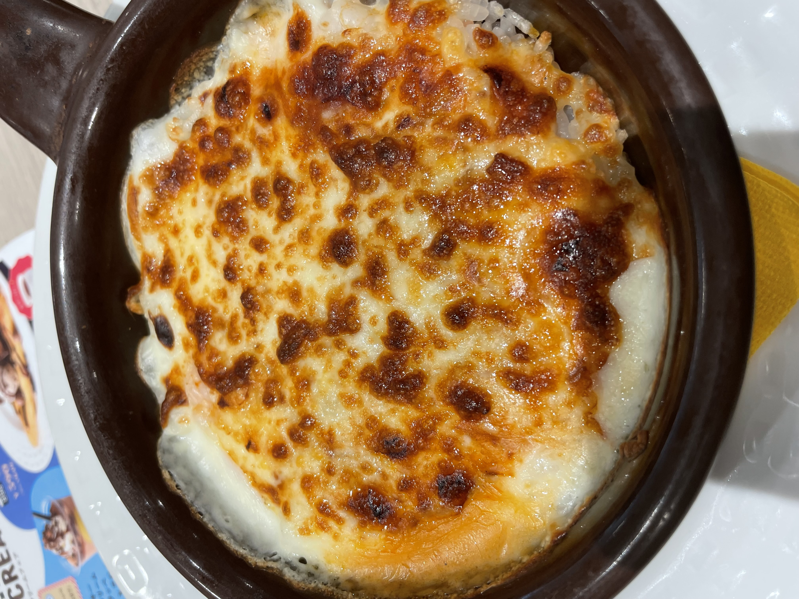
（Photo taken by myself）
26/5/7（Posted）TERUO＠teruo
Somehow oddly good. I end up eating it pretty often after all.
■Popcorn Shrimp
⇒★★★⋆ 3.5
■COCOS (Meito Yomogidai Branch)
■Nagoya City
■275 yen
■Ate day：26/5/6
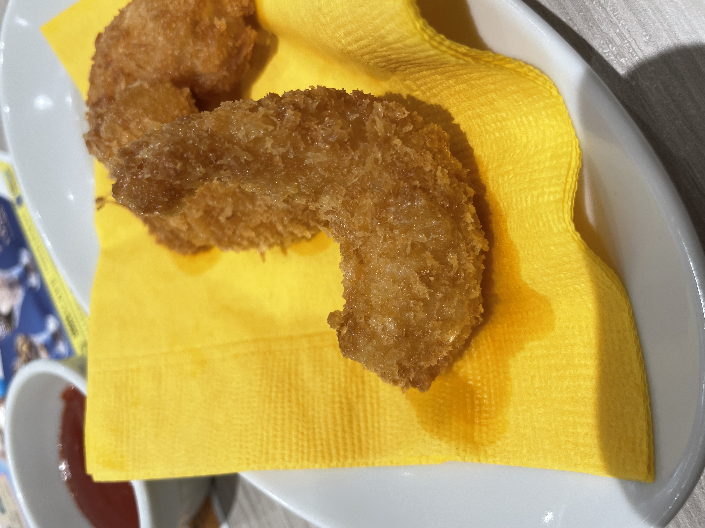
（Photo taken by myself）
26/4/18 (posted) TERUO＠teruo
Not that great. The single doria is better.
■Mini! Doria & Choice Mini! Pasta (Mini! Fresh Basil & Mozzarella Tomato Pasta) Lunch
⇒★★★⋆ 3.5
■COCO’S (Meito Yomogidai store)
■Nagoya City
■1199 yen
■Ate day: 26/4/17
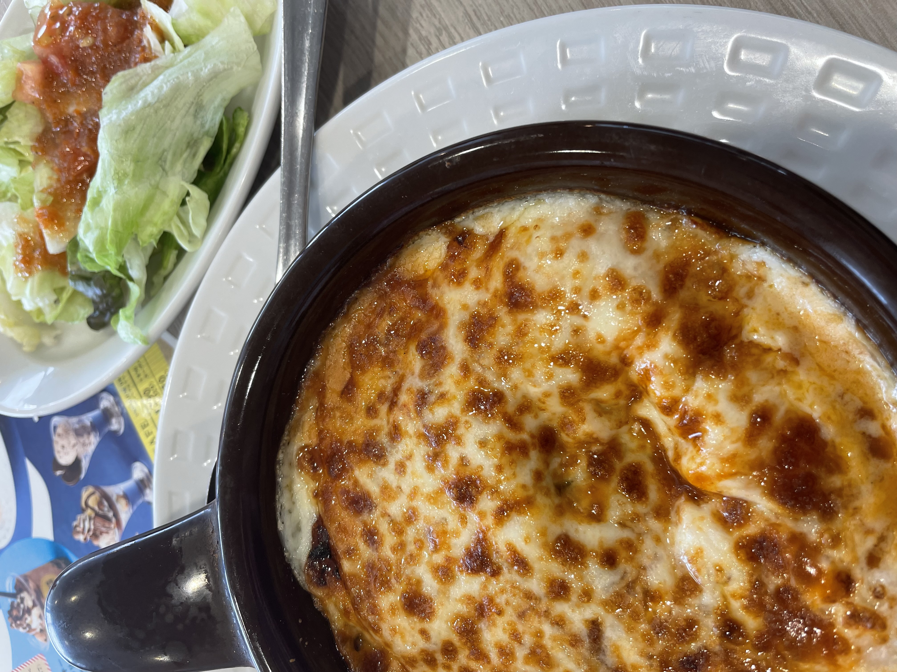
(photo taken by me)
26/4/10（投稿日）TERUO＠teruo
As expected, it’s yummy. I’ve always thought this might be the best thing at Cocos lol. It’s really yummy.
■Mini Doria
⇒★★★★ 4.0
■COCOS (Meito Yomogidai Branch)
■Nagoya City
■Around 600 yen
■Ate day: 26/4/9
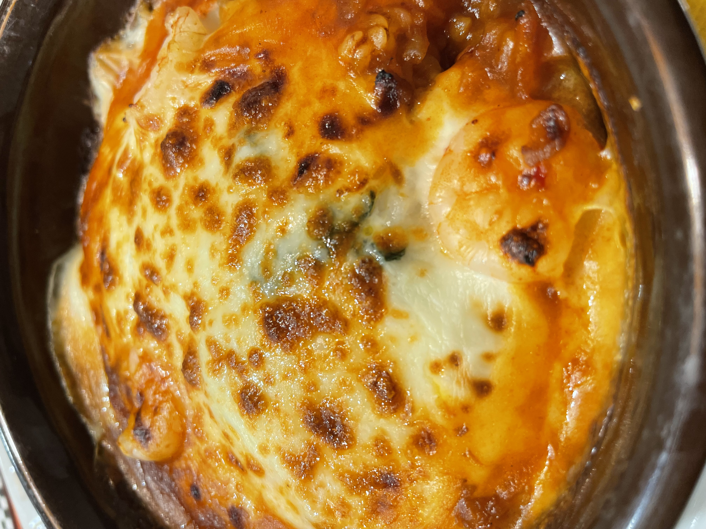
(Photo taken by myself)
26/4/10（Posted）TERUO＠teruo
Pretty good.
■Corn Soup
⇒★★★⋆ 3.5
■COCO'S (Meito Yomogidai Branch)
■Nagoya City
■319 yen
■Ate day: 26/4/9
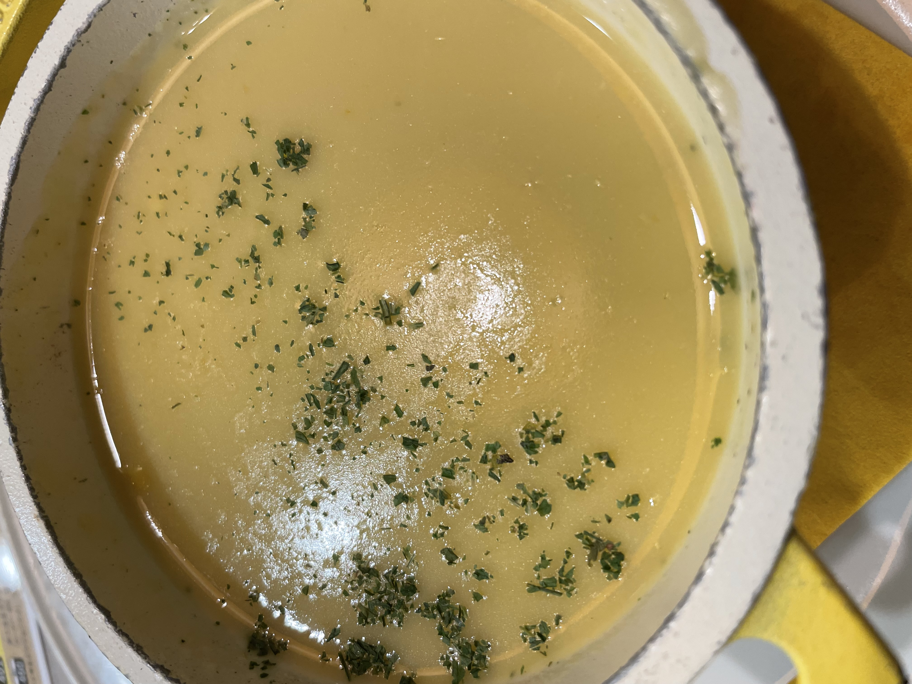
(Photo taken by myself)
26/4/9 (Posted) TERUO＠teruo
Kinda good, actually.
■Popcorn Shrimp
⇒★★★⋆ 3.5
■Cocos (Meito Yomogidai Branch)
■Nagoya City
■275 yen
■Ate day: 26/4/9
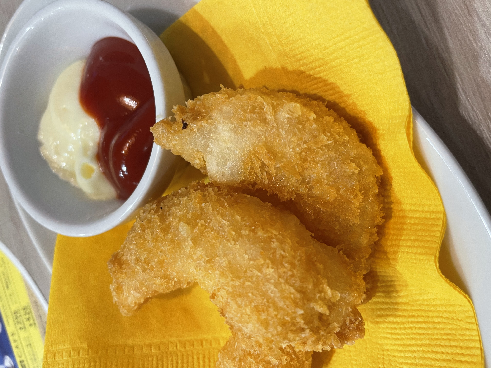
(Photo taken by myself)
26/3/24（Posted）TERUO＠teruo
Pretty good taste
■Popcorn Shrimp
⇒★★★⋆ 3.5
■Coco's (Meito Yomogidai Branch)
■Nagoya City
■275 yen
■Ate day：26/3/24
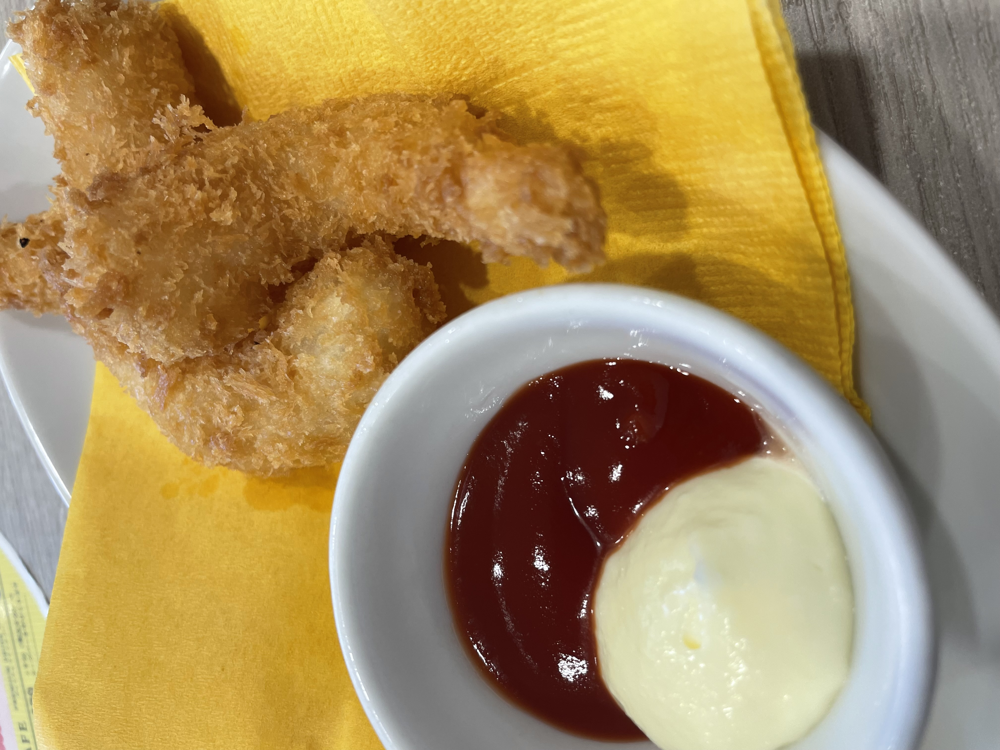
（Photo taken by myself）
26/3/23 (Posted) TERUO＠teruo
Pretty good
■Popcorn Shrimp
⇒★★★⋆ 3.5
■Cocos (Meito Yomogidai Branch)
■Nagoya City
■275 yen
■Ate day: 26/3/22
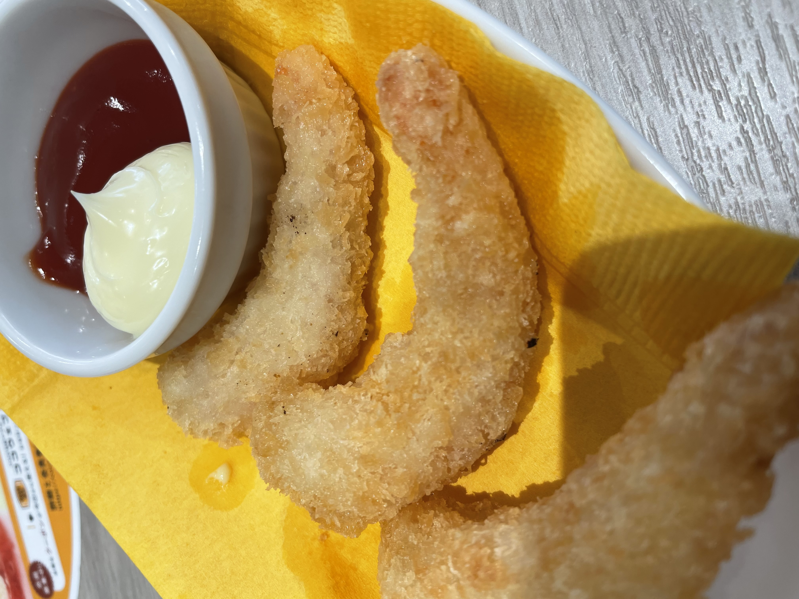
(Photo taken by myself)
26/3/7 (Posted) TERUO＠teruo
Uumm. Not that good.
■Beef Hamburger Steak Lunch (Mustard Steak Sauce)
⇒★★★ 3.0
■Cocos (Meito Yomogidai Branch)
■Nagoya City
■1,089 yen
■Ate day: 26/3/3 (Photo I took)
26/3/3（Posted）TERUO＠teruo
Hmm… I wish the hamburger was a bit tastier. The concept of a wrapped bake is quite nice though.
■Rich Beef Stew Wrapped Hamburger 145g Lunch
⇒★★★⋆ 3.5
■Cocos (Meito Yomogidai Branch)
■Nagoya City
■1,199 yen
■Ate day：26/2/26
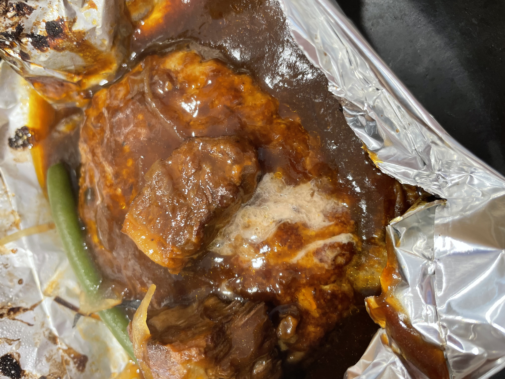
（Photo I took）
26/2/18 (Posted) TERUO @teruo
It was normally good.
■Fried Chicken
⇒★★★⋆ 3.5
■COCO'S (Meito Yomogidai Branch)
■Nagoya City
■About 500yen
■Ate day: 26/2/13
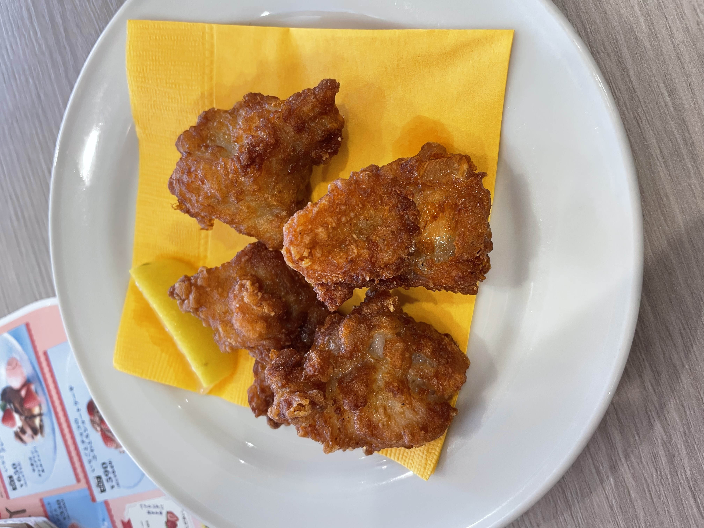
(Photo taken by myself)
26/2/10（Posted）TERUO＠teruo
It was just normally good.
■Pizza Quattro Formaggi
⇒★★★⋆ 3.5
■COCO’S (Meito Yomogidai Branch)
■Nagoya City
■About 550yen
■Ate day：26/2/6 (Photo taken by me)
26/2/10 (Posted) TERUO @teruo
A reliable 4.0 as always.
■Mini Doria
⇒★★★★ 4.0
■COCO'S (Meito Yomogidai branch)
■Nagoya City
■About 600yen
■Ate day: 26/2/6
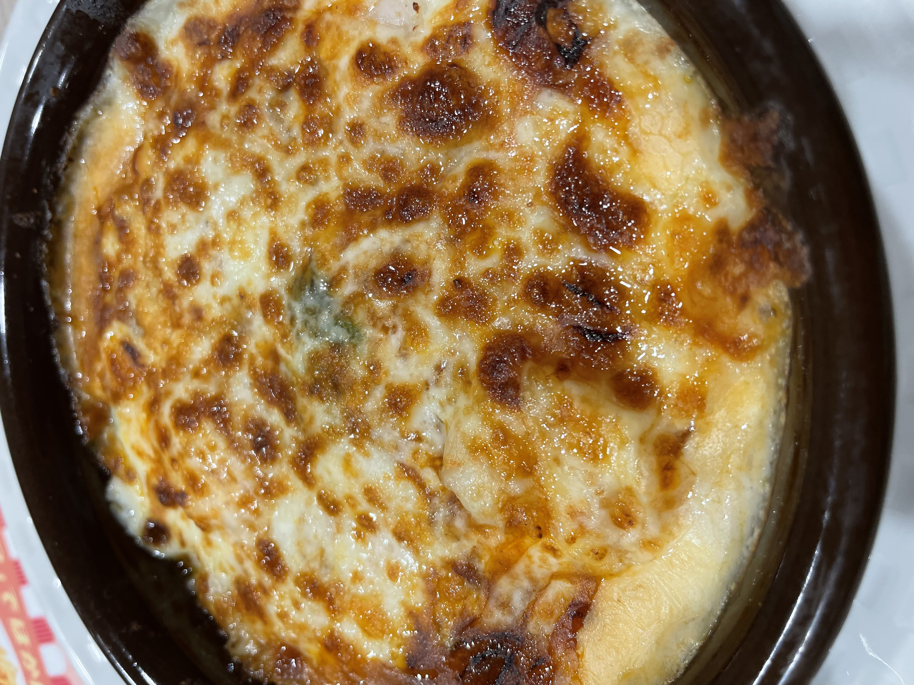
(Photo taken by myself)
26/2/2（Posted）TERUO＠teruo
normal. Good value for the price. Somehow huge.
■Baked Potato
⇒★★★ 3.0
■COCO'S (Meito Yomogidai branch)
■Nagoya City
■About 250 yen
■Ate day：26/2/1
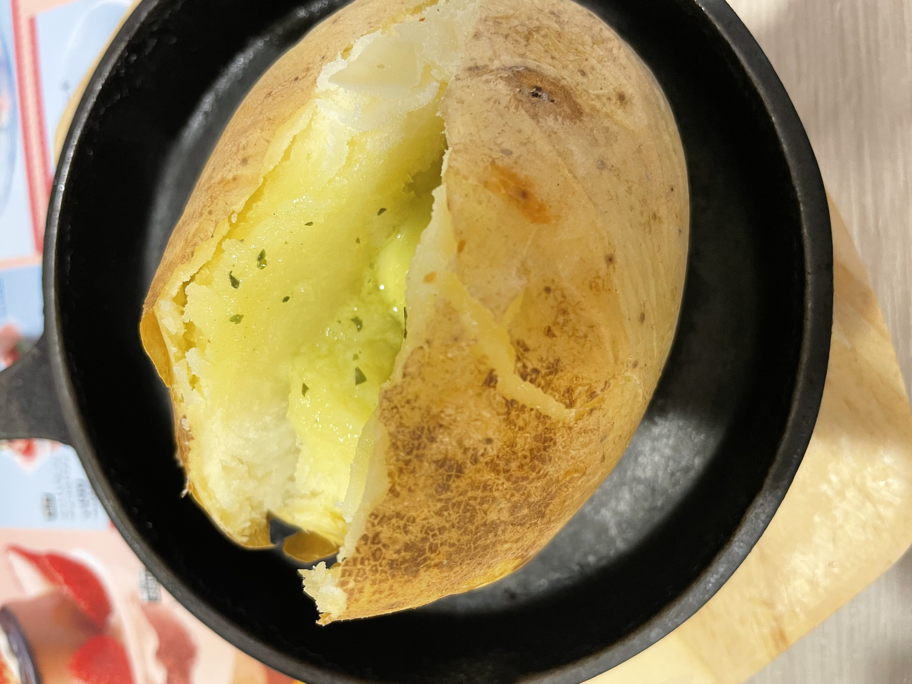
(Photo taken by myself)
26/2/1 (Posted) TERUO＠teruo
This is really good. Among Cocos dishes, this might be the best one lol
■Mini Doria
⇒★★★★ 4.0
■COCO'S (Meito Yomogidai Branch)
■Nagoya City
■About 600 yen
■Ate day：26/1/31
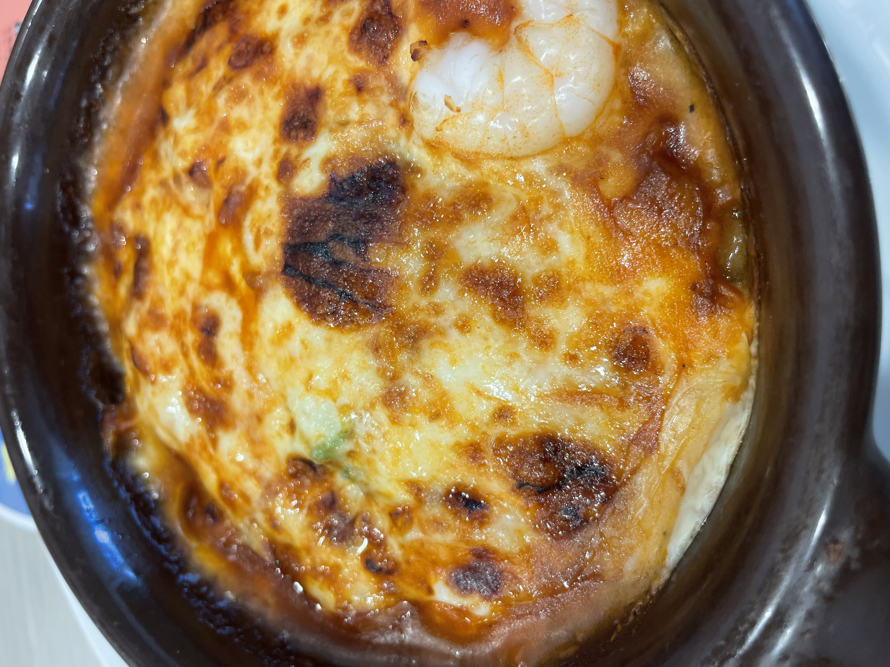
(Photo I took)
26/1/2 (Posted) TERUO＠teruo
It was seriously delicious. It tastes like happiness. How good was it? So good that it made me want to try making doria at home.
Compared to when I ate doria at Cocos on 25/12/2, it felt like this one had more sauce. If you compare the photos, you can probably see the difference. That might be one reason why it was so good.
■Mini Doria
⇒★★★★ 4.0
■COCO'S(Meito Yomogidai branch)
■NagoyaCity
■About600yen
■Ate day: 26/1/2
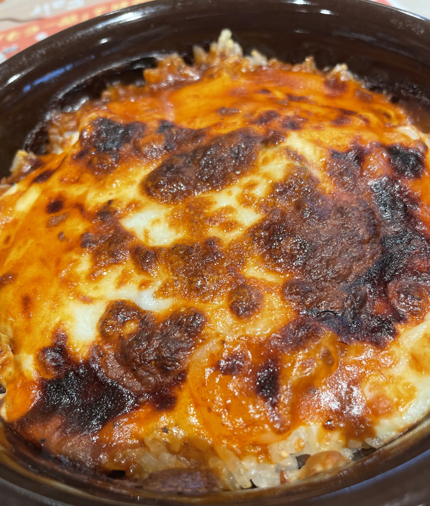
(Photo taken by me)
25/12/2（Posted） TERUO＠teruo
Gently yummy.
■Mini Doria
⇒★★★★ 4.0
■COCO'S （Meito Yomogidai branch）
■Nagoya City
■About 600yen
■Ate Day: 25/12/2
 (Photo I took)
(Photo I took)
 (Photo taken by me)
(Photo taken by me)